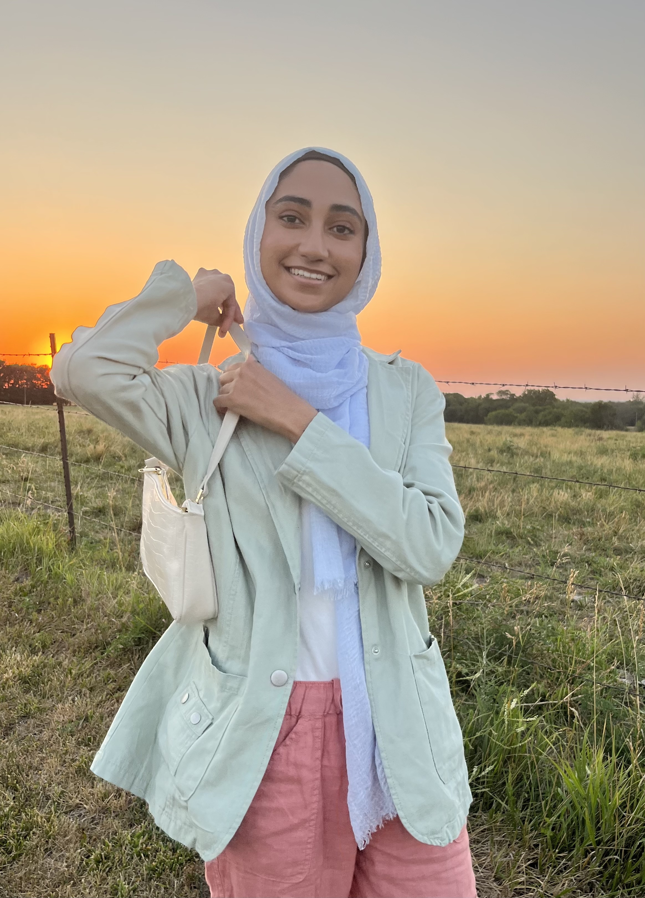

Sabeen Ahmad
Website Comittee Repo
“I joined WIC freshman year because there are not alot of women in C.S. and I could tell from day one, this was a community filled with support and friendship. This group has definitely gone above my expectations. I think my favorite part is the sense of community in WIC. It's so nice to see fellow WIC members in passing, even if you don't know them, we always give each other a wave and a smile.”